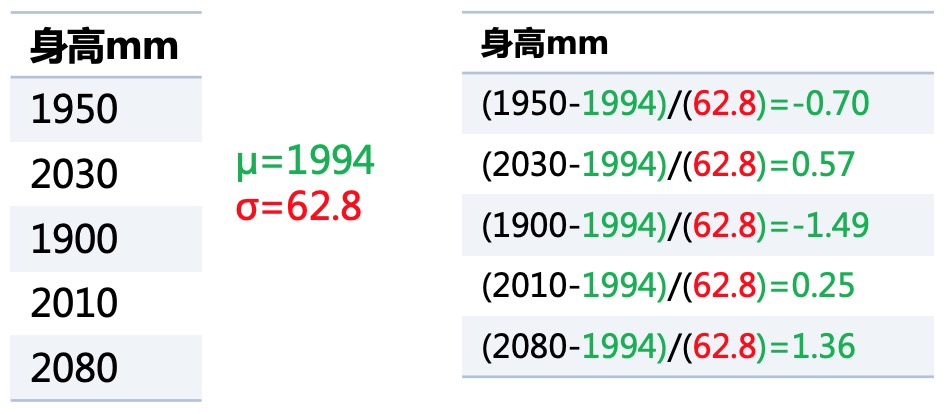

特征处理之(二)：无量纲化和哑编码
数据和特征决定了机器学习的上限，而模型和算法只是逼近这个上限而已！
无量纲化能提升特征可比性，优化训练时间；哑编码能降低模型复杂度，提升特征表达能力，提升运算时间，提升非线性能力。
特征处理之无量纲化和哑编码
无量纲化
一、什么是无量纲化
首先，什么是量纲，量纲是指：将一个物理导出量用若干个基本量的乘方之积表示出来的表达式，称为该物理量的量纲式，简称量纲。举个简单的例子，“身高=1950mm”，这里面其实蕴涵着两样东西，一个是1950 是数字基本量，另一个是 1cm是单位基本量 ，所以 $1950mm = 1950 \times 1mm$ 就是一个量纲式。另外相似的，“5平方米”，就是$5 \times 1m \times 1m$ 也是一个量纲式。
那么量纲会带来一个问题，就是无法进行相互比较，身高1950mm的人，与身高20cm的人谁更高？1950>20？于是1950mm的人更高吗？因此特征与特征之间因为量纲的存在导致数字量与数字量之间无法比较大小，也就在最后的时候无法判断特征与特征之间的重要性对比。比如模型 $y=\theta_1x_1+\theta_2x_2+ \theta_3$，其中 $\theta_1$ 就是特征值 $x_1$ 的参数也就意味着 $\theta_1$ 就是特征(身高)的重要性。但如果如下左图 $x_1$是身高， $x_2$是臂展，$\theta_1$需要除以10才能与 $\theta_2$对比大小，否则就不公平。
于是我们需要去除特征值的量纲，那么去除量纲也有两种不同的方法，一个叫归一化，一个叫标准化。两者操作很像，但作用和目的不同。
二、无量纲化有什么作用
标准化的目的是将样本的各个特征值转换到同一量纲下使得不同度量的特征具有可比性；归一化的目的是将各样本转化为单位向量使得模型迭代更快更好；
三、无量纲化如何操作
3.1 标准化
数据的标准化是将数据按比例缩放，使之落入一个小的特定区间。标准化面向的是一个特征，对该特征的所有样本值进行标准化。
（1） Min-Max 标准化
Min-Max 标准化，是可以将数据从自然范围缩放至0-1的区间，且不破坏分布情况。
（2） Z-score 标准化
Z-score 标准化，是可以将数据从自然范围缩放至较小的区间，且满足均值为0，方差为1（注意并不是将分布变成了标准分布，只是满足了标准分布的均值方差条件）。也不会破坏原有的分布情况。

（3） Min-Max 与 Z-score 标准化的异同
异：Min-Max变换依赖某两个值最大和最小，Z-score标准化则依赖所有值
异：Min-Max会转变成[0-1]的区间内，Z-score标准化没有这个区间限制只是数据的均值为0方差为1
- 同：标准化目的都是为了使得不同度量的特征具有可比性
3.2 归一化
数据的归一化也是将数据按比例缩放，使之落入一个小的特定区间。但归一化面向的是一个样本，对该样本的所有特征值进行归一化。
（1）为什么要归一化
提升模型收敛速度
提高模型算法精度
归一化效果如下图，归一化之后等高线更圆更均匀（如右图），在似然函数寻优时就能提升模型收敛速度（图中红线为梯度寻优）；提高算法精度是因为在计算一些距离的算法时，下图中变量$\theta_1$的取值范围比较小，涉及到距离计算时其对结果的影响远比变量$\theta_2$带来的小，所以这就会造成了精度的损失。
所以归一化很有必要，他可以让各个特征对结果做出的贡献相同。

（2）基于L2的归一化
基于L2的归一化，是将数据除以L2范数，就是各元素的平方和然后求平方根。
3.3 标准化与归一化的区别
- 对象不一样:
- 标准化的对象是一个特征列；
- 归一化的对象是一个样本行;
- 目的不一样:
- 标准化的目的是将样本的各个特征值转换到同一量纲下使得不同度量的特征具有可比性；
- 归一化的目的是将各样本转化为单位向量使得模型迭代更快更好；
哑编码
一、什么是哑编码
首先哑编码面向的是离散型的特征。哑编码是将一个离散型特征进行一对多映射产出多个特征的编码方式，每个特征编码只代表一个若干级别间的差异。
下图即为年龄特征，离散化成为年龄段特征(有单独的另一篇文章讲述)，再最后哑编码为四个不同的特征。

二、哑编码有什么作用
- 简化了模型训练的复杂性，降低模型过拟合的风险（是离散化带来的优势）
- 离散化后的特征对异常数据有很强的鲁棒性（是离散化带来的优势）
- 稀疏向量内积乘法运算速度快，因为稀疏矩阵有实数的值很少，做内积运算时就会有很多优化手段
- 线性模型表达能力受限，单变量离散化为N个后，每个变量有单独的权重，相当于为模型引入了非线性，能够提升模型表达能力，加大拟合能力；
- 离散化后可以进行特征交叉，由M+N个变量变为M*N个变量，进一步引入非线性，提升表达能力
三、哑编码如何操作
3.1 oneHot 编码
One-Hot编码，又称为一位有效编码，主要是采用N位状态寄存器来对N个状态进行编码，每个状态都由他独立的寄存器位，并且在任意时候只有一位有效。
3.2 dummy 编码
和One-Hot编码基本一样，但是比One-Hot编码少了一个状态。其实可以简单理解，“少年”这个状态被其他状态全为0给取代了。
3.3 One-Hot 与 dummy 编码的区别
如果不使用正则化的情况下，那么One-Hot编码的模型会有多余的自由度。这个自由度体现在你可以把某一个分类权重参数增加某一数值，同时把其余的分类权重参数都减小某一数值，而模型不变。在dummy编码中，这些多余的自由度就都被限制住了。
可以简单用 $y=\theta_1x_1+\theta_2x_2+\theta_3x_3+\theta_4x_4+\theta_5$ 作为例子，${x_1,x_2,x_3,x_4}={少年,青年,中年,老年}$ ，当模型的$\theta_5$下降时(无论是减小还是缩小)，其余的所有$\theta$都对应增加(或者变大)，就可以保证模型不变了。这就是模型的自由度，会在训练或者调优时造成麻烦。
但如果使用正则化的情况下，那么正则化本身就能够处理这些多余的自由度。此时，用One-Hot编码看上去更有优势，因为每个分类型变量的各个值的地位就是对等的了。
结语
特征处理是在机器学习中占据非常重要的地位，特征工程决定了整个模型的上限，而特征工程中最基础的就是特征处理。本篇主要回顾下特征处理中的无量纲化和哑编码。最后最后拿出成果：
- 什么是无量纲化/哑编码
- 无量纲化/哑编码有什么作用
- 无量纲化/哑编码如何操作